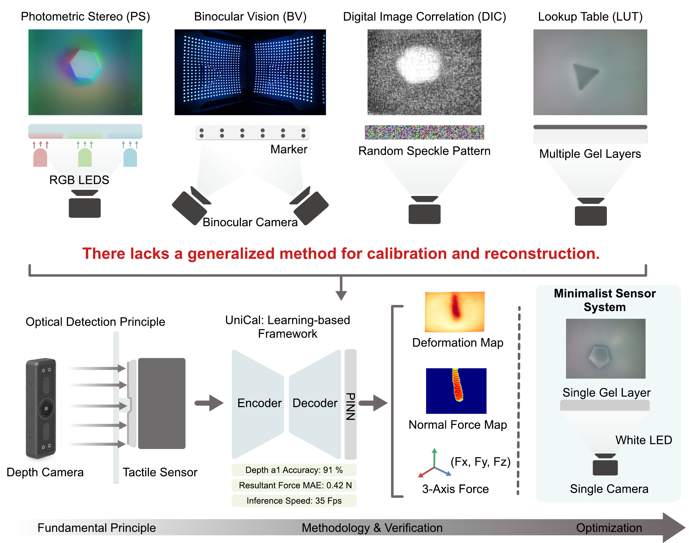
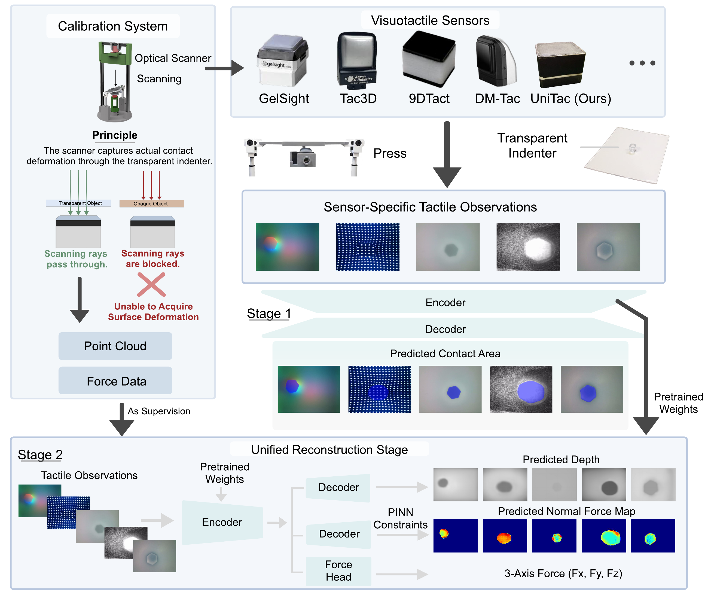
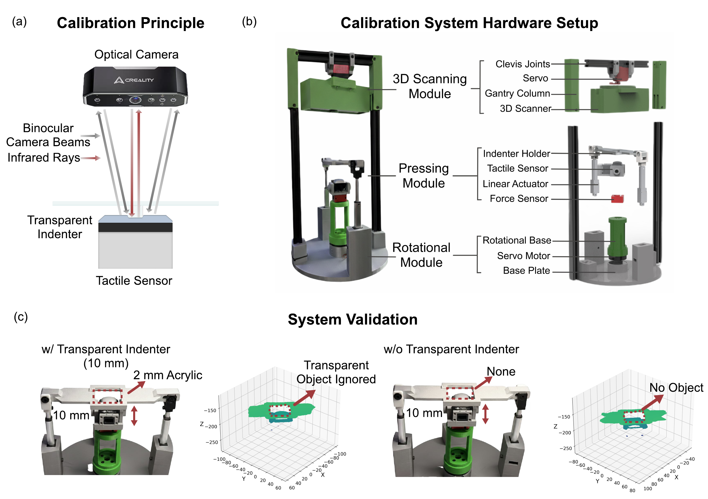
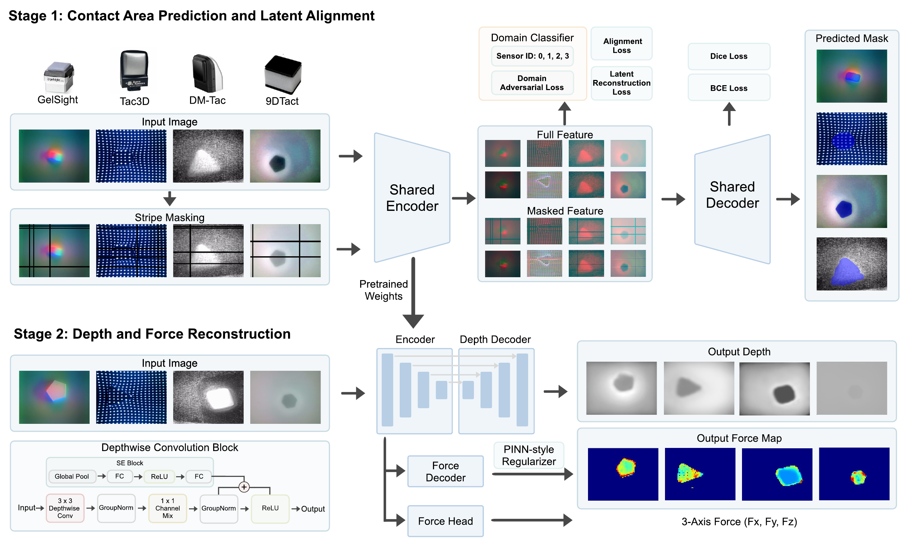
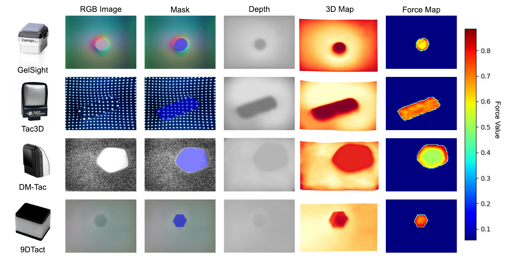
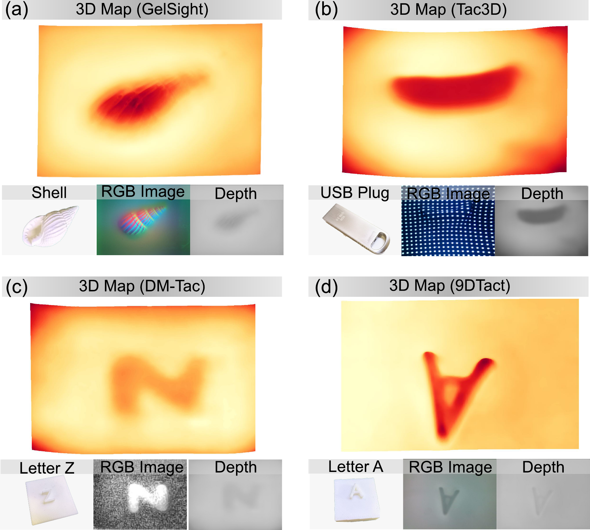
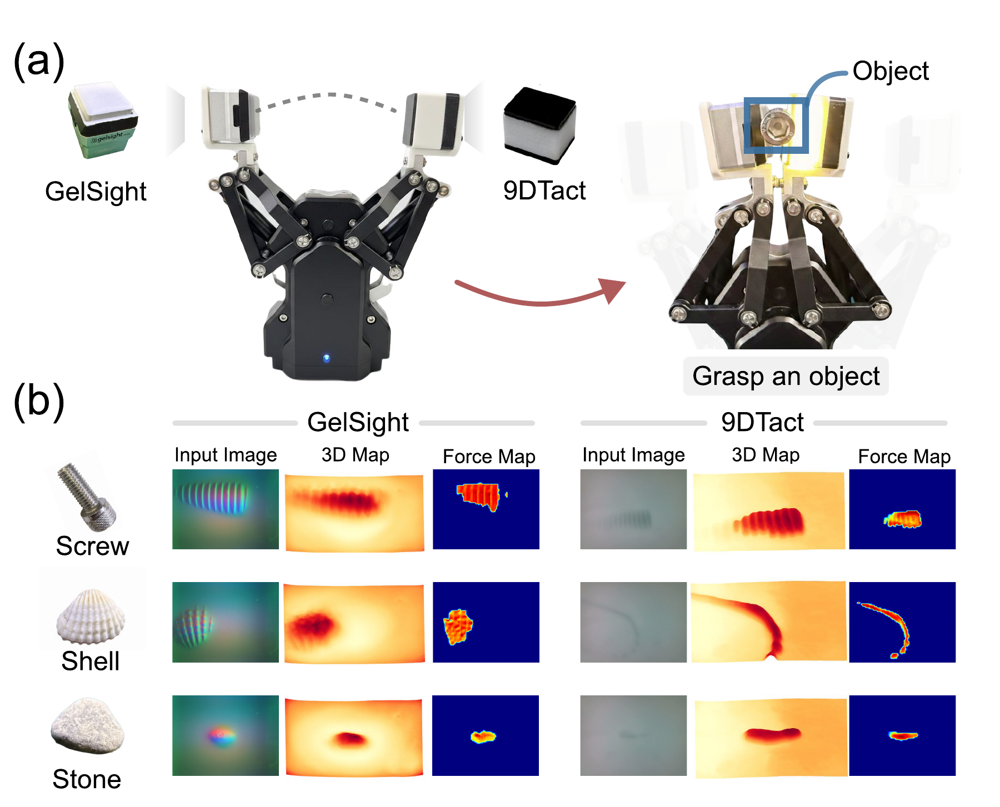

To enable consistent contact perception across heterogeneous visuotactile sensors, we propose UniCal, a framework comprising an automated calibration platform and a two-stage learning pipeline for cross-sensor deformation reconstruction and force estimation. The calibration platform turns a well-known optical limitation into a measurement asset by pairing 3D scanners with transparent indenters — directly acquiring metric surface deformation synchronized with 3-axis contact force, without proprietary hardware or manual annotation. Built on this calibration, the two-stage learning pipeline first pretrains a shared encoder to bridge sensor heterogeneity, and then jointly predicts depth maps, 3-axis forces, and normal force maps from monocular tactile images. With a single shared model, UniCal achieves over 91% depth accuracy and a resultant force MAE of 0.42 N at 35 fps, evaluated on four commercial sensors plus our minimalist UniTac sensor.
A 3D scanner sees straight through transparent objects and cannot detect them — we turn this limitation into a free calibration channel. Pairing optical scanners with transparent indenters reveals the underlying tactile deformation, synchronized with 3-axis force, across heterogeneous sensors. One shared model reconstructs depth, force vectors, and dense force maps at 35 fps.
Transparent indenters and optical scanning acquire deformation point clouds and force ground truth across heterogeneous visuotactile sensors. Training then proceeds in two stages: Stage 1 learns contact-area prediction from sensor-specific tactile images, providing pretrained encoder weights for Stage 2, which performs unified reconstruction — jointly predicting depth maps, normal force maps, and 3-axis force from a single monocular tactile image.

Infrared light transmits through transparent media with negligible refraction, and the lack of surface texture invalidates stereo matching. Both infrared and binocular scanners therefore cannot detect the transparent indenter and see straight through it, registering the underlying tactile surface instead — the foundation of our calibration framework.

A two-stage learning pipeline. Stage 1 pretrains a shared encoder via contact-area prediction and latent alignment across four sensors, with stripe masking enforcing self-consistency between full and masked features. Stage 2 reuses the pretrained encoder for unified depth and force reconstruction, jointly predicting a depth map, a normal force map, and a 3-axis force vector from a single monocular tactile image.

A single model produces consistent depth maps, contact masks, 3D reconstructions, and force maps for GelSight, Tac3D, DM-Tac, and 9DTact — despite their fundamentally different sensing principles.

| Sensor | AbsRel ↓ | RMSE ↓ | a₁ ↑ | Fx MAE (N) ↓ | Fy MAE (N) ↓ | Fz MAE (N) ↓ |
|---|---|---|---|---|---|---|
| GelSight | 0.1003 | 0.4856 | 0.9227 | 0.043 | 0.029 | 0.484 |
| Tac3D | 0.0874 | 0.4646 | 0.9421 | 0.022 | 0.020 | 0.411 |
| DM-Tac | 0.0939 | 0.7888 | 0.9308 | 0.082 | 0.076 | 0.457 |
| 9DTact | 0.0708 | 0.5012 | 0.9469 | 0.082 | 0.076 | 0.545 |
Side-by-side real-time comparison of our unified reconstruction against each sensor's original SDK. UniCal recovers complete geometry where photometric integration drifts, marker tracking blocks, speckle correlation truncates, and lookup tables leak background.
Real-time depth and force reconstruction on daily objects.

Built with only a monocular RGB camera, white LEDs, and a single-layer reflective elastomer. No color-coded illumination, no markers, no speckle pattern, no multi-layer gel — calibration alone is enough.
A joint-adaptive gripper with GelSight and 9DTact on opposing fingers — each sensor independently reconstructs the local contact surface and estimates 3-axis force in its own coordinate frame. The two sensors agree on normal-force magnitudes despite their different imaging mechanisms.

@article{unical2026,
title = {UniCal: A Unified Calibration System for Visuotactile Sensors via Optical Transparency},
author = {Anonymous},
journal = {Manuscript},
year = {2026}
}